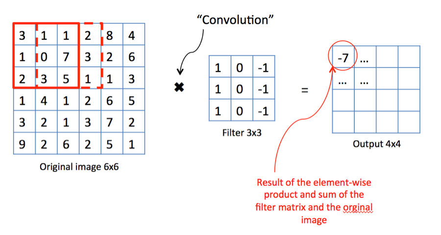

import torch
from torchvision import datasets
from torch.utils.data import DataLoader
from torchvision.transforms import ToTensor, Lambda
import matplotlib.pyplot as plt
import numpy as np
def show(img):
"""Function for displaying image"""
npimg = img.numpy()
plt.imshow(np.transpose(npimg, (1, 2, 0)))
plt.axis('off')
train_data = datasets.CIFAR10(
root="data",
train=True,
download=True,
transform=ToTensor(),
# One hot encodes the target
target_transform=Lambda(lambda y: torch.zeros(10, dtype=torch.float).scatter_(0, torch.tensor(y), value=1))
)
test_data = datasets.CIFAR10(
root="data",
train=False,
download=True,
transform=ToTensor(),
# One hot encodes the target
target_transform=Lambda(lambda y: torch.zeros(10, dtype=torch.float).scatter_(0, torch.tensor(y), value=1))
)
img, target = train_data[0]
show(img)Chapter 5: Convolutional Neural Network
Introduction
Today we discuss convolutional neural networks (CNNs). But first we are going to give a quick introduction to PyTorch.
PyTorch is a python library for building machine learning models.
Introduction
PyTorch has two main features:
- Tensors
- Backpropagation
Introduction
Tensors in PyTorch are basically the same thing as numpy ndarrays except that you can do operations on PyTorch tensors with a GPU.
By convention, the first dimension of a PyTorch tensor is usually the mini-batch dimension.
For example you should interpret a tensor of shape (2, 10) as an array that contains two vectors with 10 components each and a tensor of shape (3, 5, 5) as an array that contains three 5 by 5 matrices.
Loading data
We first need to learn how to load data in PyTorch.
PyTorch has two abstractions: a Dataset class and a DataLoader class. The Dataset class represents your data, while DataLoader wraps Dataset and allows you to iterate over it.
Loading data
In this chapter we will use the CIFAR10 dataset:

This dataset ships with Torchvision which is a sub library of PyTorch that adds utils for handling pictures.
Here is how to load the dataset:
Loading data
Loading data
Building the model
To build a model in PyTorch we need to define a class that inherits from the PyTorch’s Module class.
In the constructor we define the architecture of our model. We also need to implement the forward method where we define the forward pass of our model. We do not need to define the backward pass for backpropagation, PyTorch figures it out automatically.
Also, for classification models, do not apply softmax to the output layer as the PyTorch’s cross-entropy loss implementation already does that. We discussed why this is done in the last chapter.
Building the model
from torch import nn
class NeuralNetwork(nn.Module):
def __init__(self):
super().__init__()
self.flatten = nn.Flatten() # Flattens out the image into a vector
self.linear_relu_stack = nn.Sequential(
nn.Linear(3*32*32, 512),
nn.ReLU(),
nn.Linear(512, 512),
nn.ReLU(),
nn.Linear(512, 10),
)
def forward(self, x):
x = self.flatten(x)
return self.linear_relu_stack(x)
print(NeuralNetwork())Building the model
NeuralNetwork(
(flatten): Flatten(start_dim=1, end_dim=-1)
(linear_relu_stack): Sequential(
(0): Linear(in_features=3072, out_features=512, bias=True)
(1): ReLU()
(2): Linear(in_features=512, out_features=512, bias=True)
(3): ReLU()
(4): Linear(in_features=512, out_features=10, bias=True)
)
)Dataloaders
Let’s define our dataloaders.
Training the model
Let’s define functions to train the model for 1 epoch.
from tqdm import tqdm # This is a library that implements loading bars
import sys
def train_epoch(dataloader, model, loss_fn, optimizer):
model.train() # Set model to training mode
total_loss = 0
total_batches = 0
with tqdm(dataloader, unit="batch", file=sys.stdout) as ep_tqdm:
ep_tqdm.set_description("Train")
for X, y in ep_tqdm:
X, y = X.to(device), y.to(device)
# Forward pass
pred = model(X)
loss = loss_fn(pred, y)
# Backward pass
loss.backward()
optimizer.step()
# Reset the computed gradients back to zero
optimizer.zero_grad()
# Output stats
total_loss += loss
total_batches += 1
ep_tqdm.set_postfix(average_batch_loss=(total_loss/total_batches).item())
def eval_epoch(dataloader, model, loss_fn):
model.eval() # Set model to inference mode
total_loss = 0
total_batches = 0
total_samples = 0
total_correct = 0
with torch.no_grad(): # Do not compute gradients
with tqdm(dataloader, unit="batch", file=sys.stdout) as ep_tqdm:
ep_tqdm.set_description("Val")
for X, y in ep_tqdm:
X, y = X.to(device), y.to(device)
pred = model(X)
total_loss += loss_fn(pred, y)
total_correct += (pred.argmax(dim=1) == y.argmax(dim=1)).type(torch.float).sum()
total_samples += len(X)
total_batches += 1
ep_tqdm.set_postfix(average_batch_loss=(total_loss/total_batches).item(), accuracy=(total_correct/total_samples).item())Training the model
Now all that there is left to do is to define the loss function and organize the training loop.
# Use GPU if available
device = torch.accelerator.current_accelerator().type if torch.accelerator.is_available() else "cpu"
print(f"Using {device} device")
model = NeuralNetwork().to(device) # This tells pytorch which device to use when training and inferencing
# Hyperparameters
learning_rate = 0.0001
epochs = 3
loss_fn = nn.CrossEntropyLoss().to(device) # Initialize the loss function
optimizer = torch.optim.Adam(model.parameters(), lr=learning_rate) # Initialize the optimizer
# Organize the training loop
for t in range(epochs):
print(f"Epoch {t+1}\n")
train_epoch(train_dataloader, model, loss_fn, optimizer)
eval_epoch(test_dataloader, model, loss_fn)
print("-------------------------------")
print("Done!")Training the model
Using cuda device
Epoch 1
Train: 100%|██████████| 391/391 [00:02<00:00, 171.05batch/s, average_batch_loss=1.93]
Val: 100%|██████████| 79/79 [00:00<00:00, 180.31batch/s, accuracy=0.367, average_batch_loss=1.79]
-------------------------------
Epoch 2
Train: 100%|██████████| 391/391 [00:02<00:00, 177.21batch/s, average_batch_loss=1.73]
Val: 100%|██████████| 79/79 [00:00<00:00, 198.39batch/s, accuracy=0.407, average_batch_loss=1.69]
-------------------------------
Epoch 3
Train: 100%|██████████| 391/391 [00:02<00:00, 177.61batch/s, average_batch_loss=1.64]
Val: 100%|██████████| 79/79 [00:00<00:00, 196.90batch/s, accuracy=0.437, average_batch_loss=1.6]
-------------------------------
Done!Training the model
We can also save the trained model to disk and load it as follows.
NeuralNetwork(
(flatten): Flatten(start_dim=1, end_dim=-1)
(linear_relu_stack): Sequential(
(0): Linear(in_features=3072, out_features=512, bias=True)
(1): ReLU()
(2): Linear(in_features=512, out_features=512, bias=True)
(3): ReLU()
(4): Linear(in_features=512, out_features=10, bias=True)
)
)Training the model
You can also save only the weights of the model and not the model structure as follows.
Convolution
Convolutional Neural Networks (CNNs) are networks that have convolutional layers. Convolutional layers perform the convolution operation.
Convolution operation is pretty simple. You take your input matrix and then you take a smaller matrix called the filter. Then you slide your filter matrix along the input matrix and at each step you multiply the matrices componentwise and sum up. This way you get a matrix as output.
Convolution
Its easier to understand the operation by looking at a picture:
Convolution
We’ve defined the 2d convolution operation. You can define 1d or \(n\)d convolution operations similarly.
Convolutions let the model group up inputs that are spatially close to each other and then learn patterns.
Also convolutions can learn patterns irrespective of where they appear in the input. This can be quite difficult for a model with only fully connected layers.
These two properties make convolutions work very well on images, as you can imagine.
Convolution
Let’s see how to apply the convolution operation in PyTorch.
import torch
from torch import nn
import numpy as np
from PIL import Image
import matplotlib.pyplot as plt
def show(img):
"""Function for displaying image"""
plt.imshow(img.squeeze(), cmap='gray')
plt.axis('off')
img = Image.open('../images/castle.jpg')
img.load()
img = torch.from_numpy(np.asarray(img, dtype="int32") / 255)
print("Input image:")
show(img)Convolution
Input image:Convolution
Let’s apply the edge detection filter.
conv = nn.Conv2d(
in_channels=1, # How many channel our input has, we have a monochrome image so its 1 in our case
out_channels=1, # How many filters to use
kernel_size=(3, 3), # Filter matrix size
bias=False
)
filter_matrix = torch.tensor(
[[-1, -1, -1],
[-1, 8, -1],
[-1, -1, -1]], dtype=torch.float64
).unsqueeze(0).unsqueeze(0) # The unsqueezes are there to have the correct dimensions
conv.weight = nn.Parameter(filter_matrix) # Manually set the filter
print("Edge detection applied:")
show(conv(img.unsqueeze(0)).detach().numpy()[0])Convolution
Edge detection applied:Convolutional Neural Networks
Let’s build a CNN.
class CNN(nn.Module):
def __init__(self):
super().__init__()
self.convolution = nn.Sequential(
nn.Conv2d(in_channels=3, out_channels=12, kernel_size=(3, 3)),
nn.MaxPool2d(kernel_size=(2, 2)),
nn.BatchNorm2d(num_features=12), # num_features - how many channels the input has
nn.Conv2d(in_channels=12, out_channels=24, kernel_size=(3, 3)),
nn.MaxPool2d(kernel_size=(2, 2))
)
self.flatten = nn.Flatten()
self.linear_relu_stack = nn.Sequential(
nn.Linear(864, 1028),
nn.ReLU(),
nn.Linear(1028, 1028),
nn.ReLU(),
nn.Linear(1028, 10),
)
def forward(self, x):
x = self.convolution(x)
x = self.flatten(x)
return self.linear_relu_stack(x)
print(CNN())Convolutional Neural Networks
CNN(
(convolution): Sequential(
(0): Conv2d(3, 12, kernel_size=(3, 3), stride=(1, 1))
(1): MaxPool2d(kernel_size=(2, 2), stride=(2, 2), padding=0, dilation=1, ceil_mode=False)
(2): BatchNorm2d(12, eps=1e-05, momentum=0.1, affine=True, track_running_stats=True)
(3): Conv2d(12, 24, kernel_size=(3, 3), stride=(1, 1))
(4): MaxPool2d(kernel_size=(2, 2), stride=(2, 2), padding=0, dilation=1, ceil_mode=False)
)
(flatten): Flatten(start_dim=1, end_dim=-1)
(linear_relu_stack): Sequential(
(0): Linear(in_features=864, out_features=1028, bias=True)
(1): ReLU()
(2): Linear(in_features=1028, out_features=1028, bias=True)
(3): ReLU()
(4): Linear(in_features=1028, out_features=10, bias=True)
)
)Convolutional Neural Networks
We used two layers we have not discussed yet:
- Max pooling
- Batch normalization
Convolutional Neural Networks
Max pooling constructs a lower resolution image from a given one by keeping only the max value from a region. These layers are commonly used with convolution layers to make the image slightly more translation invariant.
This image summarizes max pooling:

Convolutional Neural Networks
Batch normalization layer is used during training to normalize the batch (that is make the mean of the batch 0 and standard deviation 1). This layer helps normalize the gradient so that it is not too big or too small so that the model is able to learn efficiently.
The batch normalization layer should only be used during training and turned off during inference.
Calling model.train() sets the model to training mode and turns on layers like batch normalization while calling model.eval() sets model to evaluation mode and turns these layers off.
Convolutional Neural Networks
Let’s train our CNN. We can copy paste the previous code.
# Use GPU if available
device = torch.accelerator.current_accelerator().type if torch.accelerator.is_available() else "cpu"
print(f"Using {device} device")
model = CNN().to(device) # This tells pytorch which device to use when training and inferencing
# Hyperparameters
learning_rate = 0.0001
epochs = 3
loss_fn = nn.CrossEntropyLoss().to(device) # Initialize the loss function
optimizer = torch.optim.Adam(model.parameters(), lr=learning_rate) # Initialize the optimizer
# Organize the training loop
for t in range(epochs):
print(f"Epoch {t+1}\n")
train_epoch(train_dataloader, model, loss_fn, optimizer)
eval_epoch(test_dataloader, model, loss_fn)
print("-------------------------------")
print("Done!")Convolutional Neural Networks
Using cuda device
Epoch 1
Train: 100%|██████████| 391/391 [00:02<00:00, 163.50batch/s, average_batch_loss=1.55]
Val: 100%|██████████| 79/79 [00:00<00:00, 194.79batch/s, accuracy=0.523, average_batch_loss=1.34]
-------------------------------
Epoch 2
Train: 100%|██████████| 391/391 [00:02<00:00, 160.16batch/s, average_batch_loss=1.25]
Val: 100%|██████████| 79/79 [00:00<00:00, 192.54batch/s, accuracy=0.579, average_batch_loss=1.19]
-------------------------------
Epoch 3
Train: 100%|██████████| 391/391 [00:02<00:00, 163.64batch/s, average_batch_loss=1.1]
Val: 100%|██████████| 79/79 [00:00<00:00, 191.92batch/s, accuracy=0.609, average_batch_loss=1.1]
-------------------------------
Done!Fine tuning
One nice thing about neural networks is that they are quite reusable. You can take a network that was pre trained on some dataset, change its output layers to fit your problem and then run a few epochs worth of training on your dataset. This process is called fine tuning.
Fine tuning pre trained networks reduces training costs as you will typically need less training time to get good results when compared to how long it would take you on a “fresh” model.
Fine tuning
Let’s see how to do fine tuning in PyTorch.
We will use ResNet. ResNet is a CNN model. The innovation of ResNet are residual connections (res stands for “residual”). They look like this:

Fine tuning
That is in a residual connection we sum up the output of downstream layers with the output of the current layer.
This is again done to help with training. It was noticed that by the time backpropagation gets to the early layers of the network the gradient is almost zero, therefore it is hard to train especially deep neural networks. Residual layers help mitigate this problem.
Fine tuning
Torchvision ships with some pre trained models for image processing tasks, ResNet included.
We are going to use ResNet18 which is the smallest version. You can see all available versions here.
Fine tuning
ResNet(
(conv1): Conv2d(3, 64, kernel_size=(7, 7), stride=(2, 2), padding=(3, 3), bias=False)
(bn1): BatchNorm2d(64, eps=1e-05, momentum=0.1, affine=True, track_running_stats=True)
(relu): ReLU(inplace=True)
(maxpool): MaxPool2d(kernel_size=3, stride=2, padding=1, dilation=1, ceil_mode=False)
(layer1): Sequential(
(0): BasicBlock(
(conv1): Conv2d(64, 64, kernel_size=(3, 3), stride=(1, 1), padding=(1, 1), bias=False)
(bn1): BatchNorm2d(64, eps=1e-05, momentum=0.1, affine=True, track_running_stats=True)
(relu): ReLU(inplace=True)
(conv2): Conv2d(64, 64, kernel_size=(3, 3), stride=(1, 1), padding=(1, 1), bias=False)
(bn2): BatchNorm2d(64, eps=1e-05, momentum=0.1, affine=True, track_running_stats=True)
)
(1): BasicBlock(
(conv1): Conv2d(64, 64, kernel_size=(3, 3), stride=(1, 1), padding=(1, 1), bias=False)
(bn1): BatchNorm2d(64, eps=1e-05, momentum=0.1, affine=True, track_running_stats=True)
(relu): ReLU(inplace=True)
(conv2): Conv2d(64, 64, kernel_size=(3, 3), stride=(1, 1), padding=(1, 1), bias=False)
(bn2): BatchNorm2d(64, eps=1e-05, momentum=0.1, affine=True, track_running_stats=True)
)
)
(layer2): Sequential(
(0): BasicBlock(
(conv1): Conv2d(64, 128, kernel_size=(3, 3), stride=(2, 2), padding=(1, 1), bias=False)
(bn1): BatchNorm2d(128, eps=1e-05, momentum=0.1, affine=True, track_running_stats=True)
(relu): ReLU(inplace=True)
(conv2): Conv2d(128, 128, kernel_size=(3, 3), stride=(1, 1), padding=(1, 1), bias=False)
(bn2): BatchNorm2d(128, eps=1e-05, momentum=0.1, affine=True, track_running_stats=True)
(downsample): Sequential(
(0): Conv2d(64, 128, kernel_size=(1, 1), stride=(2, 2), bias=False)
(1): BatchNorm2d(128, eps=1e-05, momentum=0.1, affine=True, track_running_stats=True)
)
)
(1): BasicBlock(
(conv1): Conv2d(128, 128, kernel_size=(3, 3), stride=(1, 1), padding=(1, 1), bias=False)
(bn1): BatchNorm2d(128, eps=1e-05, momentum=0.1, affine=True, track_running_stats=True)
(relu): ReLU(inplace=True)
(conv2): Conv2d(128, 128, kernel_size=(3, 3), stride=(1, 1), padding=(1, 1), bias=False)
(bn2): BatchNorm2d(128, eps=1e-05, momentum=0.1, affine=True, track_running_stats=True)
)
)
(layer3): Sequential(
(0): BasicBlock(
(conv1): Conv2d(128, 256, kernel_size=(3, 3), stride=(2, 2), padding=(1, 1), bias=False)
(bn1): BatchNorm2d(256, eps=1e-05, momentum=0.1, affine=True, track_running_stats=True)
(relu): ReLU(inplace=True)
(conv2): Conv2d(256, 256, kernel_size=(3, 3), stride=(1, 1), padding=(1, 1), bias=False)
(bn2): BatchNorm2d(256, eps=1e-05, momentum=0.1, affine=True, track_running_stats=True)
(downsample): Sequential(
(0): Conv2d(128, 256, kernel_size=(1, 1), stride=(2, 2), bias=False)
(1): BatchNorm2d(256, eps=1e-05, momentum=0.1, affine=True, track_running_stats=True)
)
)
(1): BasicBlock(
(conv1): Conv2d(256, 256, kernel_size=(3, 3), stride=(1, 1), padding=(1, 1), bias=False)
(bn1): BatchNorm2d(256, eps=1e-05, momentum=0.1, affine=True, track_running_stats=True)
(relu): ReLU(inplace=True)
(conv2): Conv2d(256, 256, kernel_size=(3, 3), stride=(1, 1), padding=(1, 1), bias=False)
(bn2): BatchNorm2d(256, eps=1e-05, momentum=0.1, affine=True, track_running_stats=True)
)
)
(layer4): Sequential(
(0): BasicBlock(
(conv1): Conv2d(256, 512, kernel_size=(3, 3), stride=(2, 2), padding=(1, 1), bias=False)
(bn1): BatchNorm2d(512, eps=1e-05, momentum=0.1, affine=True, track_running_stats=True)
(relu): ReLU(inplace=True)
(conv2): Conv2d(512, 512, kernel_size=(3, 3), stride=(1, 1), padding=(1, 1), bias=False)
(bn2): BatchNorm2d(512, eps=1e-05, momentum=0.1, affine=True, track_running_stats=True)
(downsample): Sequential(
(0): Conv2d(256, 512, kernel_size=(1, 1), stride=(2, 2), bias=False)
(1): BatchNorm2d(512, eps=1e-05, momentum=0.1, affine=True, track_running_stats=True)
)
)
(1): BasicBlock(
(conv1): Conv2d(512, 512, kernel_size=(3, 3), stride=(1, 1), padding=(1, 1), bias=False)
(bn1): BatchNorm2d(512, eps=1e-05, momentum=0.1, affine=True, track_running_stats=True)
(relu): ReLU(inplace=True)
(conv2): Conv2d(512, 512, kernel_size=(3, 3), stride=(1, 1), padding=(1, 1), bias=False)
(bn2): BatchNorm2d(512, eps=1e-05, momentum=0.1, affine=True, track_running_stats=True)
)
)
(avgpool): AdaptiveAvgPool2d(output_size=(1, 1))
(fc): Linear(in_features=512, out_features=10, bias=True)
)Fine tuning
One more option in fine tuning is to freeze some of the weights of the model. This allows you to train only a part of the model. We are not going to do this as it is unnecessary in our case but this technique is good to keep in mind.
Fine tuning
We can again reuse the code for training.
# Use GPU if available
device = torch.accelerator.current_accelerator().type if torch.accelerator.is_available() else "cpu"
print(f"Using {device} device")
model = resnet.to(device) # This tells pytorch which device to use when training and inferencing
# Hyperparameters
learning_rate = 0.0001
epochs = 3
loss_fn = nn.CrossEntropyLoss().to(device) # Initialize the loss function
optimizer = torch.optim.Adam(model.parameters(), lr=learning_rate) # Initialize the optimizer
# Organize the training loop
for t in range(epochs):
print(f"Epoch {t+1}\n-------------------------------")
train_epoch(train_dataloader, model, loss_fn, optimizer)
eval_epoch(test_dataloader, model, loss_fn)
print("Done!")Fine tuning
Using cuda device
Epoch 1
-------------------------------
Train: 100%|██████████| 391/391 [00:03<00:00, 100.09batch/s, average_batch_loss=1.03]
Val: 100%|██████████| 79/79 [00:00<00:00, 152.04batch/s, accuracy=0.755, average_batch_loss=0.706]
Epoch 2
-------------------------------
Train: 100%|██████████| 391/391 [00:03<00:00, 99.27batch/s, average_batch_loss=0.562]
Val: 100%|██████████| 79/79 [00:00<00:00, 153.76batch/s, accuracy=0.78, average_batch_loss=0.647]
Epoch 3
-------------------------------
Train: 100%|██████████| 391/391 [00:03<00:00, 99.58batch/s, average_batch_loss=0.371]
Val: 100%|██████████| 79/79 [00:00<00:00, 155.17batch/s, accuracy=0.794, average_batch_loss=0.629]
Done!Practice task
Try to improve the CNN model we created to get a better score on CIFAR10. Try to figure out how to implement residual connections in PyTorch.
Also training times will be slow, unless you use a GPU. You can use a GPU for free in Google Colab in Runtime -> Change runtime type.